本文章为博主原创文章。遵循 CC 4.0 BY-SA 版权协议，转载请附上原文出处链接和本声明。
版权信息
⚠
在 Windows 和 Linux 之间切换开发环境是一件让人头疼的事。幸运的是，WSL（Windows Subsystem for Linux）为我们提供了一种优雅的解决方案：在 Windows 上原生运行 Linux，无需虚拟机或双系统。本文将带你优雅地入门 WSL，从安装到使用，让你轻松拥有双系统的快乐而不牺牲效率。
一、WSL 是什么？
WSL（Windows Subsystem for Linux）是微软提供的一种兼容层，使你可以直接在 Windows 上运行 Linux 用户空间环境。当前主流版本是 WSL 2，它使用轻量虚拟化技术，提供完整的 Linux 内核和更好的性能。那么它有什么好处呢？
- Linux 、Windows文件共享。你可以在Windows的文件资源管理器上处理Linux子系统的文件
- 命令混用，在Windows里可以运行Liunx命令，在Linux里可以运行Windows程序
- 显卡直通，在AI训练方面非常方便
等等…
二、准备工作
✅
- Windows 10（版本 2004 及以上，推荐 21H2 或更高）
- 或 Windows 11（原生支持 WSL 2）
本文以win11为例。
开启必要功能
在搜索栏搜索 启动或关闭window功能

开启如下两项：
- 适用于Linux的Windows子系统
- 虚拟机平台

然后重启以使更改生效。
如果是win11的话重启后可以看到文件资源管理器中有个Linux
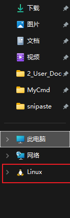
安装Linux子系统
⚠
这里提供两种方法安装WSL2：
直接安装发行版
打开下面的链接：
旧版 WSL 的手动安装步骤 | Microsoft Learn
直接下载想要的系统的发行版：
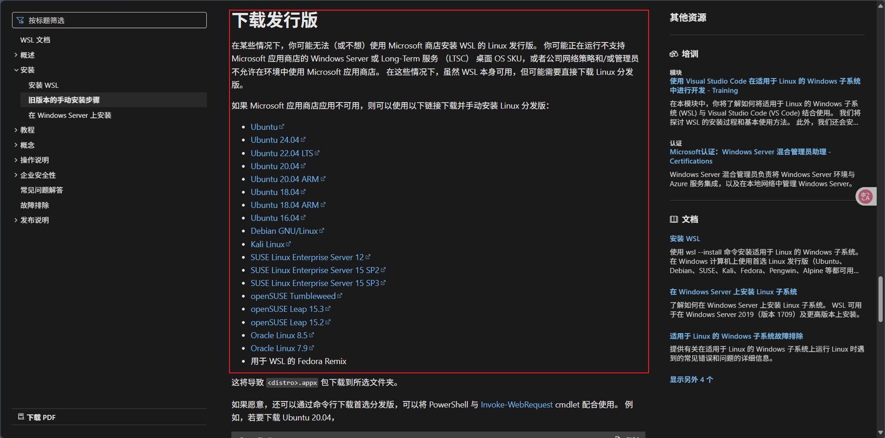
下载下来后将文件后缀改为.zip,解压缩
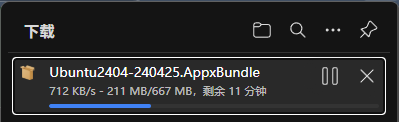
解压后，选择x64版本，同样的方法，继续解压
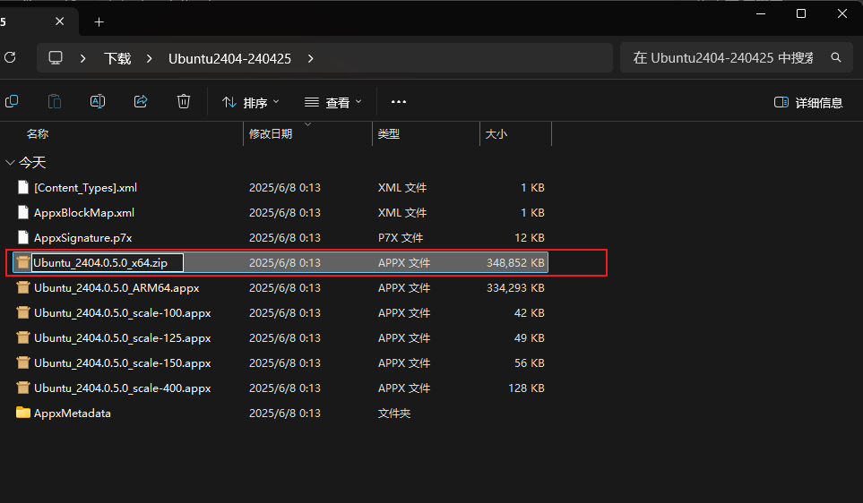
解压后，复制如下两个文件到你想要安装的指定目录
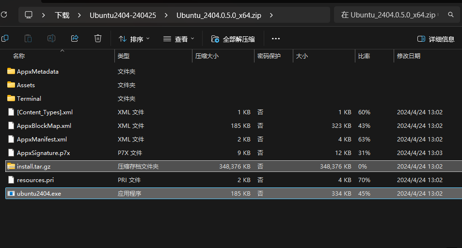
例如我的是E:\Linux\Ubuntu-24.04LTS
在目录下双击运行exe文件，自此安装完成。
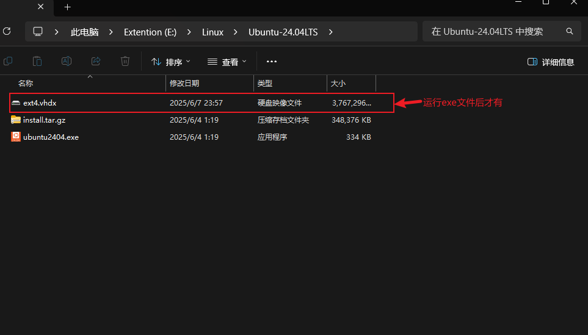
命令行安装（不推荐）
不推荐原因如下：
- 此方法下安装的Linux子系统默认安装在c盘，无法更改安装路径，想要迁移比较麻烦。
- 由于服务器原因，下载很慢，需要一些上网技巧才能流畅下载。
打开cmd命令提示符窗口，输入如下命令：
1 | |
等待安装成功。默认安装Ubuntu系统。
也可以指定版本
输入
1 | |
可以查看当前可安装的发行版。

比如安装Debian，直接输入
1 | |
等待安装完成即可。
安装完成后提示输入用户名和密码，注意密码输入是不显示的。
开始使用
💡如果你的电脑只有那种丑丑的简陋的命令行工具，可以在微软商店下载一个Windows Terminal Preview获得更好的体验
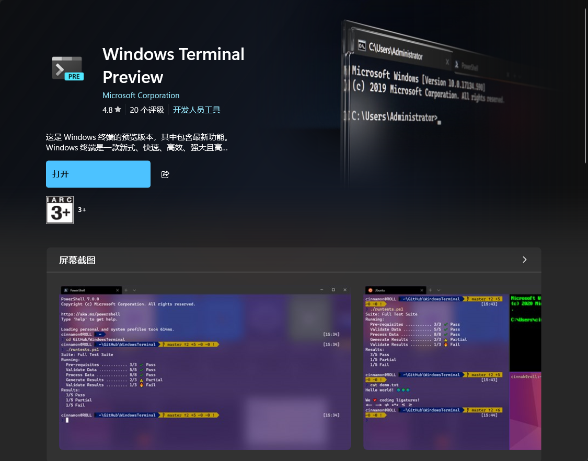
常用命令速查
| 命令 | 功能 |
|---|---|
wsl |
启动默认 Linux 发行版 |
wsl -l -v |
查看已安装的发行版和 WSL 版本 |
wsl --set-version <发行版> 2 |
将指定发行版升级到 WSL 2 |
wsl --set-default-version 2 |
设置默认启动Linux版本 |
wsl -d <发行版> |
启动指定发行版 |
wsl --shutdown |
关闭所有正在运行的 WSL 实例 |
wsl --unregister <发行版> |
卸载发行版 |
wsl --export Ubuntu ubuntu.tar |
对子系统进行备份与恢复 【导出】 |
wsl --import <自定义名> <目标路径> <.tar源路径> |
对子系统进行读取/恢复 【导入】 |
启动
可以使用命令行启动（见上表）也可在Windows Terminal Preview下直接点击
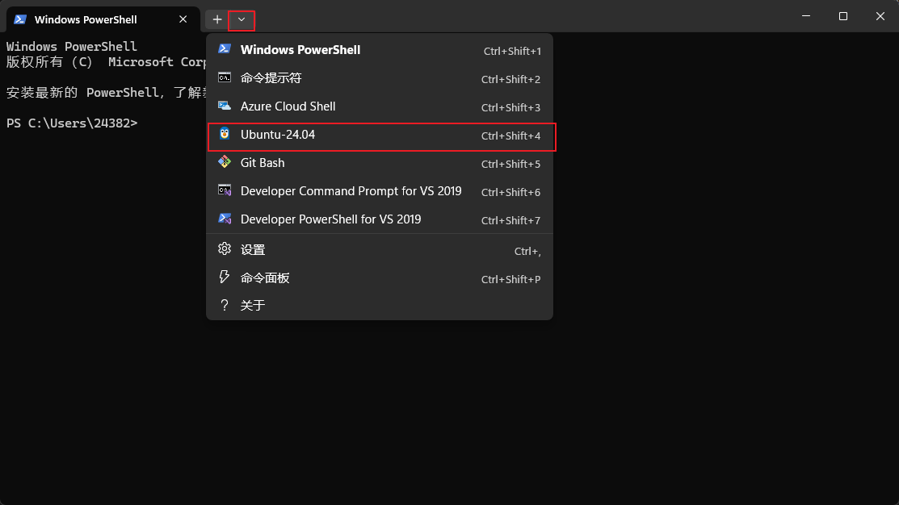
即可打开~
换源
这里使用清华源
ubuntu | 镜像站使用帮助 | 清华大学开源软件镜像站 | Tsinghua Open Source Mirror
有详细的使用介绍，根据自己的版本选择文件路径以及格式复制粘贴即可，以Ubuntu24.04为例：
使用命令
1 | |
进入编辑页面后，先把原来的配置源删除，再粘贴。
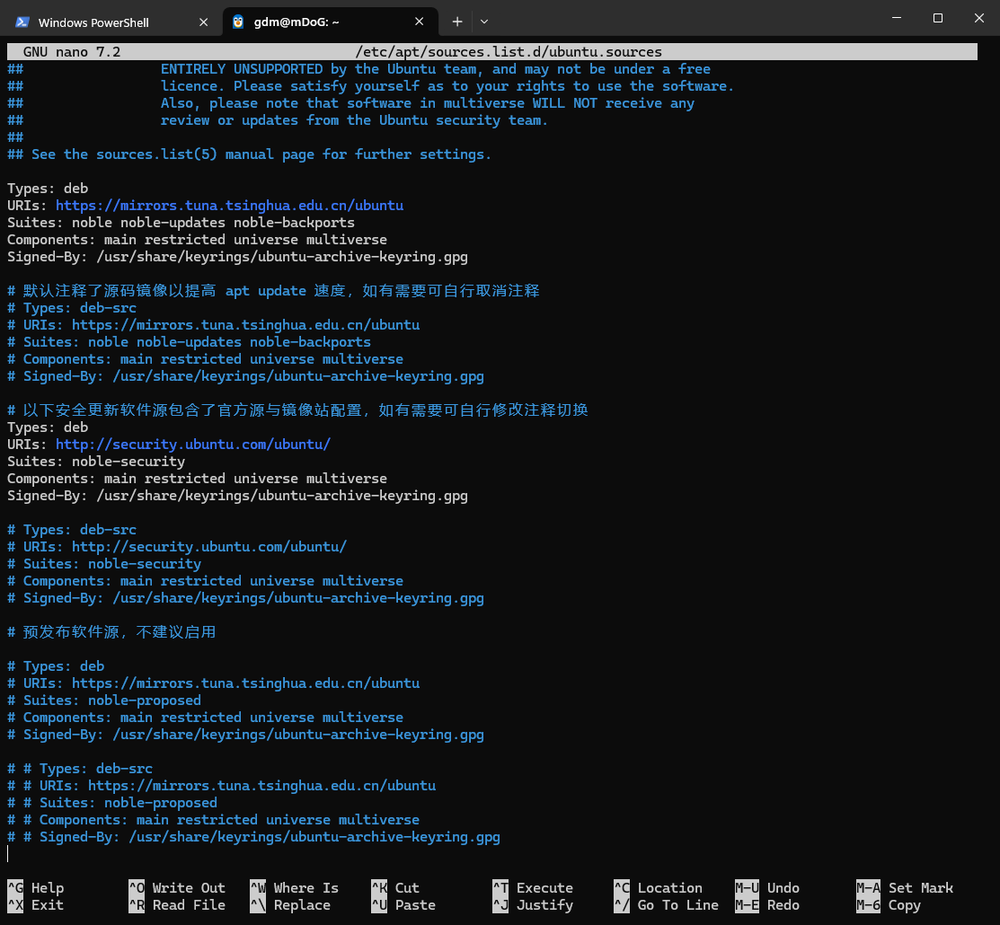
然后按Ctrl+O Enter Ctrl+x退出 （"^"指Ctrl "M"指Alt）
退出后使用命令
1 | |
更新软件包数据库。
最后使用
1 | |
升级软件包。
退出系统
Windows Terminal Preview下，直接叉掉Linux命令行窗口即可退出
或在Linux命令行窗口直接使用命令
1 | |
推出后等待几秒可以输入
1 | |
查看Liunx状态：是停止
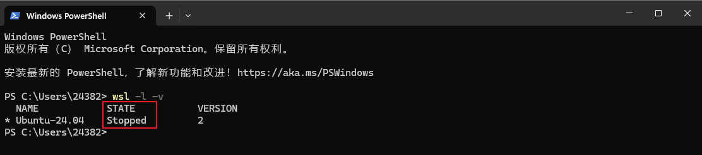
还可以使用
1 | |
一次性关闭所有运行的实例。
卸载系统
使用命令
1 | |
即可卸载
C/C++ 环境搭建
比较简单，默认的 Ubuntu 软件源包含了一个软件包组，名称为 “build-essential”,它包含了 GNU 编辑器集合，GNU 调试器，和其他编译软件所必需的开发库和工具。
想要安装开发工具软件包，直接
1 | |
验证
1 | |
有一个没有的话 单独安装一下即可
1 | |
推荐玩法
VScode插件
使用 WSL 作为开发环境，结合 VS Code 的 Remote - WSL 插件，在 Windows 中编辑、WSL 中运行。
直接下载插件
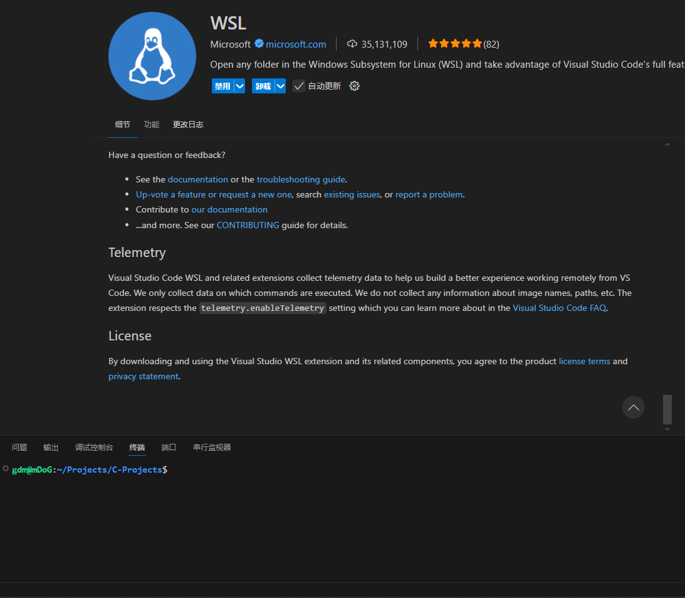
在Linux终端打开某个文件夹 然后使用命令即可在Linux环境下运行VScode
1 | |
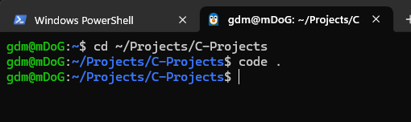
还可以直接使用VScode终端输入Linux命令。
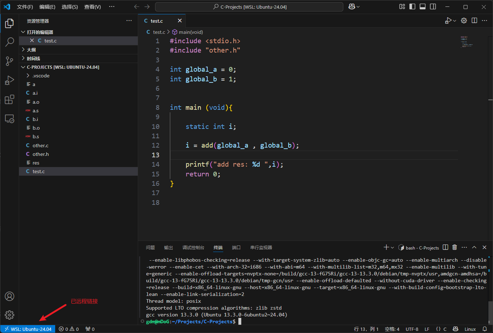
推荐安装
ranger：文件管理器
usbipd：共享usb
如何优雅的在win上运行Linux
创建时间：6月 07, 2025
最后更新：6月 14, 2025
字数统计：1.4k字
预计阅读：5min